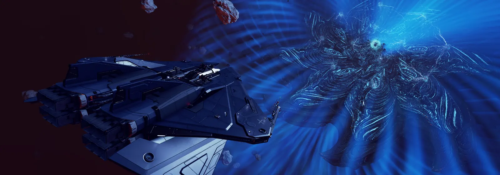
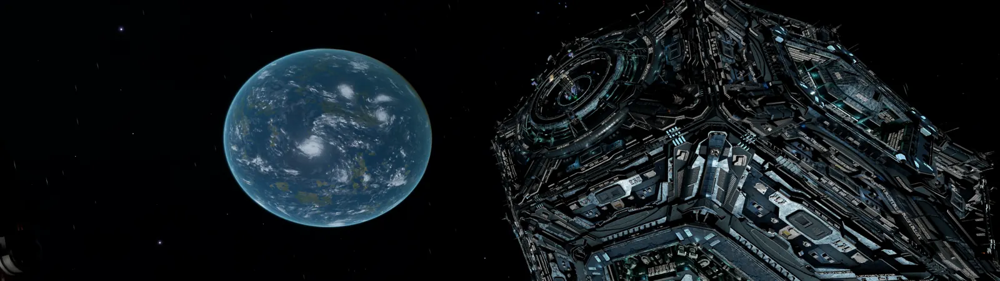
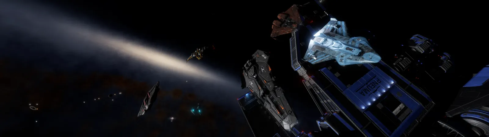

The Regiment of Imperial Mongrels is a squadron built around cooperation, independence, and a willingness to take on nearly anything the galaxy can throw at us.
A Squadron of Misfits
One pack. Many backgrounds.
Our roots carry a strong Imperial influence, but the Mongrels themselves come from every corner of the galaxy and every walk of life. Combat pilots, traders, miners, explorers, colonists, Anti-Xeno veterans, and Commanders still finding their place all fly under the same banner.
That mixture is where the name comes from. We are Mongrels — a collection of different backgrounds, specialties, loyalties, and personalities that somehow became one pack.
Members are free to pursue their own adventures or take part in squadron operations organized by Mongrel leadership. On any given day that may mean fighting a war, moving thousands of tons of cargo, building a colony, hunting pirates, exploring uncharted space, or simply helping another Commander accomplish a goal.
Our History
From Diaba to the frontier
The Mongrels began as a small faction fighting to hold a home. What followed shaped the squadron into the organization it is today.
01
Diaba
Our Beginning
The Mongrels established their home in Diaba, where the Regiment of Imperial Mongrels became a native faction and began building what would become the center of their territory.
The squadron's founders were former members of the 7th Legion Mercenaries, and the Mongrels' early independence soon led to conflict with their former organization.
02
Conflict
The War for Diaba
In the squadron's infancy, the Mongrels and the 7th Legion Mercenaries entered a prolonged conflict centered on Diaba. What began between two groups eventually drew in numerous supporting factions and Commanders, both large and small.
The once-quiet region descended into chaos as conventional battles were fought for control of the system while smaller, guerrilla-style engagements spread through neighboring systems. Neither side achieved a decisive victory, and the war ended in stalemate.
For the Mongrels, survival was victory enough. Diaba entered a period of relative peace and prosperity, giving the squadron its first opportunity to turn from survival toward growth.
03
Expansion
Beyond the Home System
With Diaba secure, the Mongrels slowly began extending their influence into nearby systems. Ahmeti became the first major step beyond the squadron's home system, followed by further expansion throughout the surrounding region.
The goal was never simply to collect territory. Mongrel expansion focused on building a network capable of supporting itself — securing access to trade, industry, resources, transportation, and strategic locations while creating new opportunities for squad members.
04
AX Hellhounds
The Thargoid War
When the Thargoid invasion reached human space, Titan Hadad established a front within striking distance of Mongrel territory.
In response, the squadron formed the AX Hellhounds, a dedicated Anti-Xeno task force. The Hellhounds joined the wider defense of humanity, supporting the Anti-Xeno Initiative and independent Commanders throughout the conflict.
After nearly two years of war, humanity prevailed. The Hellhounds were never disbanded and remain ready should the squadron — or humanity — need them again.

Titan AssaultHellhounds in the fight against the Titans.
Spire OperationsThe war extended far beyond ship combat.
05
Colonization
A New Frontier
The years following the Thargoid War brought another period of growth. Combat, trade, exploration, mining, logistics, Background Simulation operations, and large-scale infrastructure projects all became part of everyday Mongrel activity.
Then colonization opened an entirely new frontier. The Regiment has since established a presence across more than 200 systems, reaching into regions including the Coalsack Sector, the Snake Sector, and far beyond the traditional Bubble.
One of the squadron's largest undertakings has been the construction of a chain of settlements stretching nearly 3,000 light-years from inhabited space and ending at a new Mongrel hub deep in the frontier.

King's Mountain ViewA Mongrel-built foothold deep in the frontier.

Beyond the BubbleExploration remains part of how the pack pushes outward.
What We Do
There is always another job.
The Mongrels take part in nearly every aspect of Elite Dangerous. Members can pursue their own interests or contribute to organized squadron operations involving combat, trade, mining, exploration, colonization, Background Simulation work, Anti-Xeno operations, and logistics.
Whether you're collecting bounties, fighting wars, hauling construction materials, exploring beyond the Bubble, or flying escort for another Commander, there is usually something happening somewhere in Mongrel territory.
Combat
Trade
Mining
Exploration
BGS
Colonization
Anti-Xeno
Logistics
Squad Structure
Command, specialists, and the pilots who make it work.
The Mongrels use a clear command structure for organized operations while still giving members room to specialize, lead, or simply fly where they are most useful.
Admiral
CMDR Wolf258
Commanding Officer
Oversees squadron operations, sets strategic direction, and delegates objectives to the appropriate officers and departments.
Vice Admiral
CMDR D1scoT1ts
Executive Officer
Second in command. Supports squadron leadership, recruitment, organization, and day-to-day coordination.
Operational Commands
Captain Corps
Captains organize and conduct operations within their specialty and serve as mentors to other squad members.
Assigned
Anti-Xeno
CMDR Lennyshow
Coordinates defensive and offensive Anti-Xeno operations and Mongrel responses to Thargoid threats.
Assigned
Trade
CMDR LuckyNed8
Develops profitable and strategically useful trade operations, including squadron support and Powerplay objectives.
Assigned
Administration
CMDR TheSpartanBro
Supports squadron administration and organization, including management of community infrastructure.
Assigned
Mining
CMDR Nuraghi
Coordinates mining operations that support squadron members, faction objectives, and larger projects.
Position Available
Exploration / Recon
Organizes expeditions and reconnaissance missions to gather current intelligence on systems and targets.
Position Available
Powerplay
Manages Power-related objectives and coordinates with other operational commands to complete them.
Position Available
Combat
Organizes conflict zones, bounty hunting, cargo escorts, and other conventional combat operations.
Position Available
Surface Warfare
Coordinates ground conflicts, raids, surface engagements, and collaboration with Special Operations.
Position Available
Faction Relations
Manages faction objectives and coordinates with other Captains to support broader strategic goals.
Position Available
Special Operations
Builds task-force wings for specialized missions ranging from PvP engagements to hit-and-run assaults.
Lieutenant
Mission Supervisor
Turns command-level objectives into organized missions and coordinates participating wings.
CMDR TeslaBroElite lore and investigative missions
Second Lieutenant
Wing Supervisor
Leads individual wings and carries out objectives assigned by senior officers.
CMDR Beaverdaniel03Combat / Special Operations
CMDR BoogeyxxxTrade / Combat
Specialist Corps
Expertise without a single-track career.
Mongrels may specialize in one or more areas of squadron operations. Specialist ranks recognize Commanders who volunteer their expertise and prove themselves capable of completing missions in those fields. Multiple specialties are encouraged.
Master Chief
Mentor / Special Operations
Senior squadron mentor and trusted pilot for critical operations. Requires Senior Pilot qualifications.
Position currently openChief Specialist
Top Mission Pilot
Among the squadron's most reliable pilots within a chosen specialty and regularly called upon for assigned missions.
Position currently openSpecialist 1st Class
Active Mission Pilot
Highest-rated available pilot for tasks related to the member's specialties.
CMDR Daisy HuckCombat · Pilot Training · Various MissionsSpecialist 2nd Class
Line Mission Pilot
Proven and dependable within the Commander's operational specialties.
CMDR MythicalReign227Combat PvE · TradeSpecialist 3rd Class
Reserve Mission Pilot
Volunteers for missions related to one or more chosen specialties.
CMDR SpaceTrucker007Trade
Pilot Ranks
The regular squadron progression.
The public site keeps the general roster concise. A detailed member directory can be added later as part of the private Discord-authenticated area.
05
Veteran Pilot
Elite Pilot
A top-rated, highly experienced Commander with a mature and extensively engineered fleet.
1 current
04
Senior Pilot
Experienced Pilot
An active, experienced squadron member with substantial engineering completed.
2 current
03
Pilot
Squadron Pilot
A proven Mongrel who has demonstrated reliability and developed a capable fleet.
15 current
02
Junior Pilot
Pilot in Training
A developing Commander still building experience, engineering, or Pilot Federation rankings.
7 current
01
Recruit
Restricted Member
A new squadron member proving basic squad activity and credibility before promotion into the regular ranks.
5 current
Standards & Rules of Engagement
Represent the pack well.
The Regiment of Imperial Mongrels is built around teamwork, accountability, and operating openly in the same galaxy as the Commanders our actions may affect.
01
Core Standard
Open Play Is the Standard
Open Play is the standard game mode for Mongrel operations. Solo or Private Group may occasionally be practical for limited access issues such as prolonged landing-pad congestion.
Solo or Private Group must never be used to avoid combat or player opposition.
02
BGS
BGS Is Open Only
Any action intended to influence a faction or system through the Background Simulation must be performed in Open Play.
Our actions can affect other Commanders and squadrons. They deserve the opportunity to see, oppose, and counter us just as we expect the same opportunity in return.
BGS work performed in Solo or Private Group may result in removal from the squadron.
03
Combat
No Combat Logging
Intentionally closing the game, terminating the process, disconnecting your network, or otherwise forcing a disconnect to avoid destruction is prohibited.
A member determined to have deliberately combat logged may be removed from the Mongrels.
Connection Failures
Protect your reputation.
Legitimate disconnects happen. If you unexpectedly lose connection during combat, document what happened when possible so leadership can respond appropriately if questions arise.
Do not risk your reputation — or the squadron's — to save a rebuy. When losses occur during legitimate squad operations, Mongrels will make reasonable efforts to help each other recover.
General Combat
Fight hard. Fight clean.
The squadron currently maintains no standing No-Fire List, though diplomatic relationships and operational needs may change that.
Ship-Launched Fighters are acceptable during normal gameplay and PvE, but their use in PvP is strongly discouraged because of the synchronization and latency problems they can introduce.
The Mongrel Standard
Winning matters. How we win matters too.
Preparation, flying skill, teamwork, and better tactics are encouraged. Deliberately exploiting poor network behavior is not. Members are free to develop their own playstyles, specialties, and reputations, but when operating under the Mongrel name, individual actions can reflect on the entire squadron.
Work with your squadmates. Honor squad commitments. Follow operational instructions when participating in organized activity. When an edge case involving BGS, diplomacy, PvP, Powerplay, or squad interests is unclear, ask leadership before acting.
Find Your Place in the Pack
New Commander or veteran, there is room here.
Specialist, jack-of-all-trades, or still figuring out what you enjoy — the Mongrels recruit Commanders at every experience level.